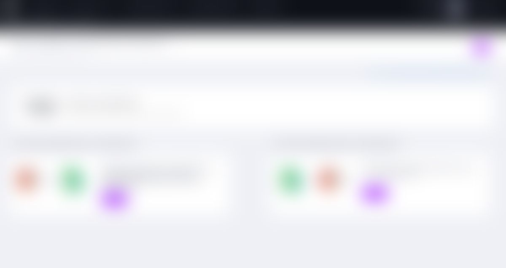
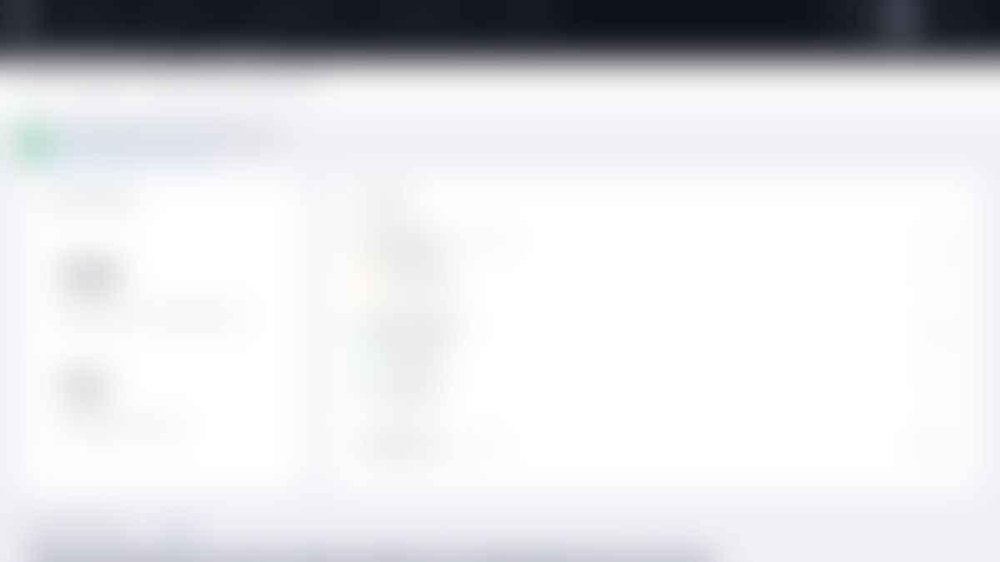
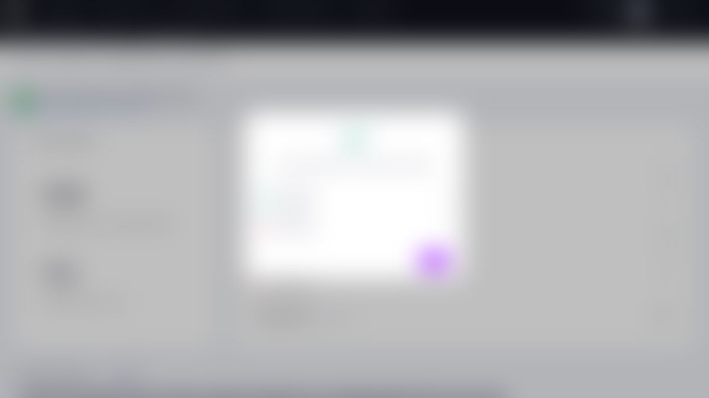
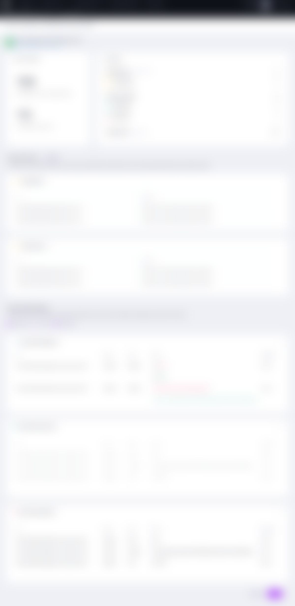
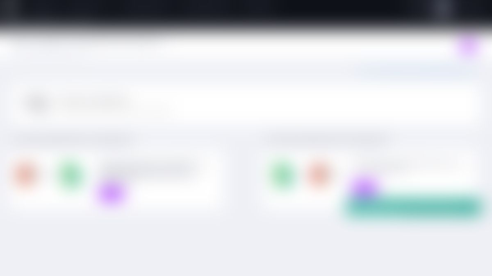

Viz Flowics · UX/UI · Gestión de datos
Data Augmentation
Un sistema para editar datasets grandes sin romper nada: exportar, editar en Google Sheets, simular el resultado, importar con auditoría.
🔒 Imágenes desenfocadas por confidencialidad — incluyen datos internos de la empresa.

🔒 Bajo NDAEl problema
Editar un dataset grande era lento, manual y sin red de seguridad
No había forma de editar datos a gran escala sin tocar cada registro a mano dentro del producto. Tampoco existía un proceso de validación: un error en una edición masiva llegaba directo a producción, sin previsualización ni forma de auditar qué había cambiado.
El riesgo: cuanto más crecía una cuenta, más grande era el dataset, y más caro se volvía cualquier error de edición.
El enfoque
Exportar, editar afuera, simular antes de importar
Diseñé un flujo de tres pasos: exportar el dataset a Google Sheets (una herramienta que los equipos ya conocían), editar ahí con todas las funciones de una planilla, e importar de vuelta con una simulación previa que mostraba exactamente qué iba a cambiar antes de confirmar nada.
Sumé un sistema de auditoría que registra cada importación: quién la hizo, cuándo, y qué cambió — así cualquier edición masiva queda trazada y es reversible.

🔒 NDA
🔒 NDAEl reporte previo a importar
Antes de confirmar, el equipo ve un reporte completo de la simulación: cuántas claves existen y cuántas quedarán, cuáles tienen errores y por qué, y el detalle de cada actualización, inserción y eliminación. Cada grupo de cambios se puede incluir o excluir con un check.

El impacto
Ediciones masivas sin miedo a romper producción
Los equipos pasaron de editar registro por registro a manejar datasets completos con confianza: la simulación previa elimina las sorpresas, y el historial de auditoría da trazabilidad total sobre qué cambió y quién lo hizo.

🔒 NDA